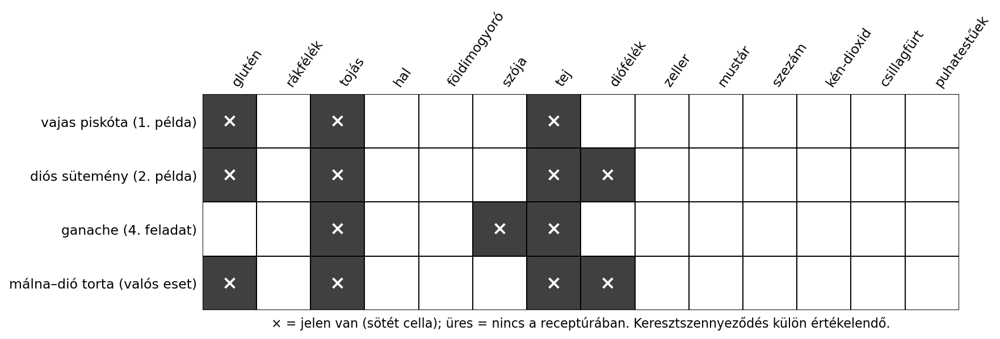

Egy cukrászda süteménypultjában egyre több vendég kérdezi meg, mennyi kalória van egy szeletben. A webshopban árusított bonboncsomagoknál pedig jogszabály kötelezhet a tápérték feltüntetésére. A hatósági ellenőrzés során a nyersanyag-nyilvántartásból, a technológiai lapból és az értékesített termék adataiból kell tudni igazolni, hogy a feltüntetett értékek nem véletlenek. Ha a cukrász fejben vagy táblázatkezelővel el tudja készíteni a tápérték-táblázatot, akkor: - pontosan tudja, mit ír a csomagolásra, - fel tudja tüntetni az allergéneket, - meg tudja indokolni a vendég kérdésére az energia- és tápanyagtartalmat, - elkerüli a félrevezető tájékoztatást.
Ebben az alfejezetben a receptúrából kiindulva számítjuk ki a késztermék 100 g-ra és egy adagra jutó tápanyag- és energiatartalmát, figyelembe véve a sütési veszteséget. Elkészítjük az allergénmátrixot és az összetevőlistát csökkenő tömegsorrendben. A kapott táblázatot később a Cukrászati termékcsoportok, megnevezések és a technológiai lap alfejezetben használjuk fel, és a Komplex gyakorló vizsgafeladatok megoldással részben is szerepelni fog.
Tegyük fel, hogy egy piskótalaphoz 420 g nyersanyagot adunk össze: tojás, liszt, cukor és vaj. Sütés közben a tészta 10% tömeget veszít: elsősorban vizet párologtat. A kész piskóta 378 g lesz. A nyersanyagokban lévő fehérje, zsír, szénhidrát és ásványi anyagok döntő része a sütőben marad, hiszen a víz elpárolgása a fő veszteség. Vagyis ugyanannyi tápanyag most kisebb tömegben oszlik el, tehát 100 g késztermékre több jut, mint 100 g nyersmasszára. A számításnak ezért mindig a késztermék tömegéhez kell kötnie a tápanyagmennyiségeket.
Definíció. Tápérték-táblázat. A tápérték-táblázat a késztermék energia- és tápanyagtartalmát adja meg: rendszerint 100 g termékre, és ha szükséges, egy adagra vagy szeletre is. A tápanyagok közül legalább a kötelező mezőket kell feltüntetni: energia, zsír, amelyből telített zsírsavak, szénhidrát, amelyből cukrok, fehérje, só. A rost és egyéb anyagok feltüntetése az előírások szerint lehet kötelező vagy önkéntes; az energiaérték számításában a rost 8 kJ/g tényezővel szerepel (ellenőrizendő: 1169/2011/EU XIV. melléklet), ezért a számításban akkor is figyelni kell rá, ha külön nem jelöljük.
Definíció. Allergénmátrix. Az allergénmátrix egy táblázat, amely a termékekre vetítve megmutatja, melyik jelölendő allergén van jelen. A 14 allergéncsoportot az 1169/2011/EU rendelet II. melléklete sorolja fel (ellenőrizendő). A mátrix a pultban, az étlapon, a webshopban és a technológiai lapon is használható arra, hogy az allergiás vendég gyorsan, egyértelmű választ kapjon.
Definíció. Összetevőlista. Az összetevőlista a felhasznált nyersanyagokat tünteti fel a felhasznált tömeg csökkenő sorrendjében. A jogszabály szerint az összetevőket a receptúra szerinti csökkenő tömegsorrendben kell megadni; az esetleges összetett alapanyagok (pl. csokoládé, marcipán) összetevőit is fel kell tüntetni (ellenőrizendő: 1169/2011/EU 18. cikk és a magyar átültetés).
Szabály. Energiatartalom-számítás. A számításhoz az alábbi átváltási tényezőket használjuk (tájékoztató, a hatályos jogszabályban foglalt tényezőket használd; ellenőrizendő):
| Tápanyag | Energiatartalom (kJ/g) |
|---|---|
| Fehérje | 17 |
| Szénhidrát | 17 |
| Zsír | 37 |
| Étkezési rost | 8 |
| Alkohol | 29 |
| Szerves savak | 13 |
A szerves savak a gyümölcsös, citromlével vagy borkősavval készült termékekben lehetnek jelen; a gyakorlati cukrászati számításban elhanyagolhatók, ha nincs jelentős mennyiségük, de a pontos jelölésnél figyelembe kell venni.
Összefüggés. A tápanyagtömeg kiszámítása nyersanyagonként. Ha egy nyersanyagból grammot használunk fel, és a nyersanyag 100 g-ra vonatkoztatott tápanyagtartalma (pl. g/100 g), akkor az adott tápanyag hozzájárulása:
például ha 200 g tojásban 12,5 g fehérje van 100 g-onként, akkor a fehérjetartalom:
Összefüggés. Sütési veszteség és a késztermék tömege. A receptúra nyersanyag-össztömege , a sütési vagy feldolgozási veszteség % a nyers tömegre vonatkoztatva. A késztermék tömege:
Ha például a nyerstömeg 420 g, a veszteség 10%, akkor:
Összefüggés. Tápanyagtartalom 100 g késztermékre. A teljes tápanyagtömeg , a késztermék tömege , ezért 100 g késztermék tápanyagtartalma:
Az energia esetében ugyanez a logika: a teljes energiatartalmat elosztjuk a késztermék tömegével és megszorozzuk 100-zal.
Összefüggés. Adagra vetített tápanyag. Ha a késztermékből adagot (szeletet, darabot) készítünk, egy adag tápanyagtartalma:
Az energiara:
A tápérték-táblázat elkészítése szakaszokban történik:
Higiénia. A tápértékszámítás nem élelmiszer-biztonsági művelet, de a felhasznált adatoknak pontosaknak kell lenniük. A nyersanyag-nyilvántartásból vett adatok és a ténylegesen felhasznált mennyiség eltérése félrevezető jelölést okozhat. A számítás során is tartsuk a nyomon követhetőséget: tudni kell, melyik receptúra, melyik gyártási nap és melyik tétel adatait használtuk.
Technológiai kulcspont. A sütési veszteség értékét mindig az adott termékre és sütőre jellemző módon mérjük. A tankönyvi példákban 8–15%-os veszteséggel számolunk, de a valóságban ez a tészta típusától, a sütőtől és a betöltött mennyiségtől függ. A pontos értéket a gyártói adatlap, a technológiai leírás vagy mérés adja (ellenőrizendő).
Egy 24 cm-es tortához való vajas piskóta receptje: tojás 200 g, liszt 100 g, cukor 100 g, vaj 20 g. A sütési veszteség 10%. Kérdezzük: mennyi a 100 g piskóta energia-, fehérje-, zsír- és szénhidráttartalma?
Adott:
- nyersanyagok és tömegeik,
- tápanyagadatok 100 g-ra (tanulási példa):
| Nyersanyag | Mennyiség (g) | Fehérje (g/100 g) | Zsír (g/100 g) | Szénhidrát (g/100 g) | Rost (g/100 g) |
|---|---|---|---|---|---|
| Tojás | 200 | 12,5 | 10,5 | 0,7 | 0 |
| Búzaliszt | 100 | 12,0 | 1,5 | 70,0 | 0 |
| Kristálycukor | 100 | 0 | 0 | 100,0 | 0 |
| Vaj | 20 | 0,5 | 82,0 | 0,5 | 0 |
Keresett: 100 g késztermék tápanyagtartalma és energiatartalma.
Képlet és behelyettesítés:
Nyers tömeg:
Késztermék tömege 10% veszteségnél:
Fehérjetömeg:
Zsírtömeg:
Szénhidráttömeg:
Rost nincs, tehát .
Energiatartalom:
100 g-ra vetítve:
Kalóriára (a teljes piskótára, nem 100 g-ra; 100 g-ra ):
Így 100 g piskóta körülbelül 1319 kJ (315 kcal) energiát, 9,8 g fehérjét, 10,3 g zsírt és 45,4 g szénhidrátot tartalmaz.
Ellenőrzés: Az összes tápanyag tömege 37,1 + 38,9 + 171,5 = 247,5 g. A késztermék 378 g, tehát a víz és a maradék szárazanyag egy része 378 – 247,5 = 130,5 g. A piskóta jellegéből adódóan ez a víztartalom, ami elfogadható. A 100 g-ra vetített értékek összege 9,81 + 10,29 + 45,37 = 65,47 g, ami kiegészül a körülbelül 34,5 g vízzel, tehát a számítás konzisztens.
Készítsünk egy diós süteményt: liszt 300 g, vaj 200 g, cukor 150 g, tojás 50 g (1 db közepes), dióbél 100 g, sütőpor 5 g. A sütési veszteség 12%. A tápanyagadatok 100 g-ra (tanulási példa):
| Nyersanyag | Mennyiség (g) | Fehérje (g/100 g) | Zsír (g/100 g) | Szénhidrát (g/100 g) | Rost (g/100 g) |
|---|---|---|---|---|---|
| Liszt | 300 | 12,0 | 1,5 | 70,0 | 0 |
| Vaj | 200 | 0,5 | 82,0 | 0,5 | 0 |
| Cukor | 150 | 0 | 0 | 100,0 | 0 |
| Tojás | 50 | 12,5 | 10,5 | 0,7 | 0 |
| Dióbél | 100 | 15,0 | 65,0 | 15,0 | 3,0 |
| Sütőpor | 5 | 0 | 0 | 0 | 0 |
Adott: receptúra, tápanyagadatok.
Keresett: tápérték 100 g-ra, energia, allergénmátrix és összetevőlista.
Számítás lépésenként:
Liszt:
g
Vaj:
g
Cukor: 0
Tojás:
g
Dió:
g
Sütőpor: 0
Liszt:
g
Vaj:
g
Cukor: 0
Tojás:
g
Dió:
g
Sütőpor: 0
Liszt:
g
Vaj:
g
Cukor:
g
Tojás:
g
Dió:
g
Sütőpor: 0
Dió: g, a többi 0.
Kalóriára (az egész süteményre; 100 g-ra ):
A teljes jelöléshez a telített zsírsavak, a cukrok és a só is kell; ezekhez a nyersanyagok adatlapjáról ugyanígy számolunk.
Allergénmátrix: A receptúrában a 14 jelölendő allergéncsoport közül jelen van: glutén (búzaliszt), tojás (tojás), tej (vaj), diófélék (dióbél). A többi allergén nincs jelen.
| Allergén | Jelen van? | Forrás a receptben |
|---|---|---|
| Glutén | igen | búzaliszt |
| Rákfélék | nem | — |
| Tojás | igen | tojás |
| Hal | nem | — |
| Földimogyoró | nem | — |
| Szója | nem | — |
| Tej | igen | vaj |
| Diófélék | igen | dióbél |
| Zeller | nem | — |
| Mustár | nem | — |
| Szezámmag | nem | — |
| Kén-dioxid/szulfitok | nem | — |
| Csillagfürt | nem | — |
| Puhatestűek | nem | — |
A pultban és az étlapon az allergénmátrix több terméket állít szembe a 14 csoporttal. Az alábbi mátrix a fejezet négy termékére készült: a vajas piskóta (1. példa) glutént, tojást és tejet; a diós sütemény (2. példa) és a málna–dió torta (valós eset) ezeken felül diót; a ganache (4. feladat) tojást, szóját és tejet tartalmaz.

Összetevőlista csökkenő tömegsorrendben: búzaliszt (300 g), vaj (200 g), cukor (150 g), dióbél (100 g), tojás (50 g), sütőpor (5 g). Ez az összetevőlista alapja; a tényleges jelöléshez az összetevőket a jogszabályi megnevezésekkel kell feltüntetni, és a búzaliszt, vaj, dió, tojás allergén jellegét kiemelni (pl. vastag betűvel).
Jogszabály. Az 1169/2011/EU rendelet szabályozza a fogyasztók élelmiszerekkel kapcsolatos tájékoztatását, benne a tápértékjelölést és az allergének feltüntetését. Az előrecsomagolt élelmiszereknél a tápértékjelölés főszabály szerint kötelező; mentességet ad az 1169/2011/EU V. melléklete (pl. a kis mennyiségben, közvetlenül a fogyasztónak vagy helyi kiskereskedelemnek szállított kézműves termékek – ellenőrizendő: melléklet pontja, NÉBIH-értelmezés). A nem előrecsomagolt süteményeknél azonban a gyakorlatban eltérő lehet; a vendéglátóhelyeken a tápértékjelölés főszabály szerint nem kötelező, kivéve, ha tápanyag-összetételre vonatkozó állítást tesznek, vagy jogszabály előírja (ellenőrizendő: 1169/2011/EU 30. cikk és a 9. cikk). Az allergének feltüntetése a nem előrecsomagolt élelmiszereknél is kötelező. A pontos cikkeket és a magyar kiegészítő szabályokat a hatályos jogszabály szerint kell ellenőrizni.
A tápérték-számításhoz használt átváltási tényezők (fehérje, zsír, szénhidrát, rost, alkohol) a rendeletben szerepelnek (ellenőrizendő). A kerekítési szabályokat a rendelet melléklete vagy a hatósági útmutató tartalmazza (ellenőrizendő).
A számításokat célszerű táblázatkezelőben, például LibreOffice Calc vagy Microsoft Excel segítségével végezni. A táblázatkezelő segítségével gyorsan változtathatók a nyersanyagmennyiségek, és a számítás automatikusan frissül. A munkafüzet felépítése:
Példa táblázatkezelő képletre a fehérjetömeg számításához (a H2
cellában): =B2*C2/100. Ha a C2 cella a nyersanyag 100 g-os
fehérjetartalma. Az összesítés: =SZUM(H2:H7). A késztermék
tömege: =B10*(1-C9/100), ahol B10 a nyers tömeg, C9 a
veszteség %-ban. A tápanyag 100 g-ra: =H8/B11*100, ahol H8
a fehérje összege, B11 a késztermék tömeg.
A táblázatkezelés célja: a vizsgán és a munkahelyen gyorsan, hibamentesen tudjunk tápérték-táblázatot előállítani. A számítások logikája azonban kézzel is követhető, mert a cukrásztanulónak ismernie kell a képleteket.
Ugyanezt a munkafüzet-logikát követi az interaktív tápérték-kalkulátor (a HTML-kiadásban): a nyersanyagsorokban a tömeg és a 100 g-os tápanyagadatok átírhatók (kiindulásként az 1. vagy a 2. példa tölthető be), a sütési veszteség (0–25%) és az adagszám csúszkával állítható; a kalkulátor a késztermék tömegét, a 100 g-ra és az egy adagra jutó tápanyagot és energiát (kJ, kcal) adja. Az 1. példával 378 g-ot, 1319 kJ-t (315 kcal), 9,8 g fehérjét, 10,3 g zsírt és 45,4 g szénhidrátot kapsz, ezt mutatja a statikus ábra is.
A tápérték-táblázat minősége akkor megfelelő, ha: - a felhasznált nyersanyagok tömege pontosan megegyezik a technológiai lappal; - a tápanyagadatok hiteles forrásból származnak; - a sütési veszteség méréssel vagy megbízható technológiai adattal alátámasztott; - az adagolás (pl. szeletszám) egyértelmű; - a kerekítés megfelel a jelölési szabályoknak; - az allergénmátrix hiánytalan, és a keresztszennyeződés kockázata is értékelve van.
Hiba esetén: ha a 100 g-ra vetített tápanyagok összege és a késztermék tömege között nem stimmel a víztartalom (pl. negatív víztartalom), akkor az adatokban vagy a veszteségben hiba lehet. Ellenőrizni kell a tápanyagadatokat, a tömegmérést és a veszteséget.
Hiba 1. A sütési veszteség figyelmen kívül hagyása. Tünet: a 100 g késztermékre számított tápanyagérték alacsonyabb, mint a valóságban, mert a számítás a nyers tömeggel osztja a tápanyagot. Ok: a tanuló a nyersanyag-össztömeggel vetít, nem a késztermék tömegével. Megelőzés/javítás: mindig a késztermék tömegét használjuk; a sütési veszteséget mérjük vagy becsüljük, és a teljes tápanyagot a késztermékre osszuk.
Hiba 2. Az összetevőlista nem csökkenő tömegsorrendben van. Tünet: a címkén vagy a technológiai lapon a kisebb tömegű nyersanyag előrébb szerepel. Ok: figyelmetlenség, vagy a lista önkényes sorrendje. Megelőzés: rendezzük a nyersanyagokat a felhasznált tömeg szerint csökkenőbe, és jelöljük az allergéneket.
Hiba 3. Az allergénmátrixból hiányzik egy jelen lévő allergén. Tünet: egy diós süteménynél a diófélék nincs feltüntetve, pedig a receptúra tartalmaz diót. Ok: a nyersanyag összetevőinek áttekintése hiányos. Megelőzés: minden nyersanyagnál nézzük meg a 14 allergéncsoportot, és a bevont kész alapanyagok (pl. csokoládé, marcipán) összetevőit is ellenőrizzük.
Hiba 4. A rost energiatartalmát nem számolják bele. Tünet: ha a rost feltüntetett, de az energia számításnál csak a 17 és 37 tényezőket használták, az energia alul lesz mérve. Ok: a rostot nem vették figyelembe. Megelőzés: ha a rostot feltüntetjük, akkor az energiaszámításnál 8 kJ/g-mal vegyük figyelembe. A rost energiája 8 kJ/g tényezővel az energiaértékbe akkor is beleszámít, ha a rostot külön nem tüntetjük fel (ellenőrizendő: 1169/2011/EU XIV. melléklet).
Hiba 5. Rossz kerekítés. Tünet: a tápérték-táblázatban a tápanyagok két tizedesjegyre, az energia 10 kJ pontossággal szerepel, ami eltér a jelölési szabálytól. Ok: nem ismerték a kerekítési előírást. Megelőzés: használjuk a rendeletben vagy hatósági útmutatóban rögzített kerekítést: energia 1 kJ-ra, tápanyagok 10 g felett 1 g-ra, 0,5–10 g között 0,1 g-ra, a só külön szabály szerint (ellenőrizendő). A számítás során ne kerekítsünk túl korán, csak a végső értéket.
Egy cukrászda új tortát vezet be, a „málna–dió réteges tortát”. A cukrász elkészíti a technológiai lapot, a receptúrával együtt kiszámítja a tápérték-táblázatot. A tápanyagadatokat a gyártói adatlapokról és egy hiteles tápanyagtáblázatból veszi. A sütési veszteséget a próbasütésnél mérte: a nyers tömeg 1 250 g, a kész piskóta 1 100 g, tehát a veszteség 12%. A tápérték-számítás eredménye: 100 g termék 1 971 kJ (471 kcal), 8,4 g fehérje, 28,5 g zsír, 45,2 g szénhidrát, 0,6 g rost (a 17, 37, 17 és 8 kJ/g tényezőkkel: ). Az allergénmátrixban a glutén, tojás, tej és diófélék szerepel. A tortaszelet 110 g, ezért egy adag energia . A cukrász feltünteti az allergéneket a pultban, és a webshopban a tápérték-táblázatot is közzéteszi. A vendég, aki dióallergiás, azonnal látja a diófélék jelenlétét, és elkerüli a terméket. A hatósági ellenőrzés során a dokumentáció megfelelő: a tápérték-számítás levezethető a receptúrából, a nyersanyag-adatlapok elérhetők. Ez az eset mutatja, hogy a tápérték-számítás nem papírmunka, hanem a vendégek tájékoztatásának és a jogi megfelelésnek a kulcsa.
1. feladat (A)
Egy nyersanyag 100 g-ra vonatkoztatott tápanyagtartalma: fehérje 12 g,
zsír 1,5 g, szénhidrát 70 g. Mennyi az energiatartalma kJ-ban és
kcal-ban? (A számításhoz használd a megadott átváltási tényezőket.)
2. feladat (A)
Egy piskóta nyersanyagainak össztömege 800 g, sütési veszteség 15%. A
nyersmassza 60 g fehérjét, 55 g zsírt, 140 g szénhidrátot és 0 g rostot
tartalmaz. Mennyi a késztermék tömege, a 100 g-ra jutó tápanyagok, és az
energia 100 g-ban?
3. feladat (B)
Az alábbi recept alapján készítsd el a tápérték-táblázatot 100 g-ra!
Recept: liszt 250 g, cukor 100 g, vaj 80 g, tojás 100 g, alma 200 g,
fahéj 2 g. A tápanyagadatok 100 g-ra: liszt: feh 12, zs 1,5, szh 70;
cukor: szh 100; vaj: feh 0,5, zs 82, szh 0,5; tojás: feh 12,5, zs 10,5,
szh 0,7; alma: feh 0,3, zs 0,2, szh 11, rost 2; fahéj: feh 0, zs 0, szh
0. A sütési veszteség 18%.
4. feladat (B)
Készítsd el az összetevőlistát csökkenő tömegsorrendben az alábbi
recepthez, és készítsd el az allergénmátrixot a 14 allergénre! Recept:
150 g étcsokoládé, 120 g tejszín, 30 g vaj, 1 db tojás (50 g,
pasztőrözött tojástermék, mert a ganache hőkezelés nélküli), 20 g cukor,
10 g narancslikőr; a termék alkoholt tartalmaz, gyermekeknek nem
ajánlott (ellenőrizendő: jelölési szabály). (A csokoládé összetevői:
kakaómassza, cukor, kakaóvaj, szójalecitin; a tejszín: tej; a vaj: tej;
a tojás: tojás; a narancslikőr: alkohol.)
5. feladat (C)
Egy tanuló az alábbi hiba miatt rossz tápértéket kapott: a sütési
veszteséget 12% helyett 2%-nak vette, és a rostot nem számolta be az
energiába. Magyarázd el, miért hibás mindkettő, és mit kell javítani!
Tegyük fel, hogy a nyersanyagok össztömege 900 g, a nyersmassza 5 g
rostot és 70 g zsírt tartalmaz. Számold ki a helyes és a hibás 100 g-ra
jutó energiát, ha a késztermék a helyes veszteséggel számolva 792 g, a
hibás adattal 882 g. (A további tápanyagoktól most eltekinthetünk; csak
a rost és a zsír energiahányadát nézzük, hogy a hiba irányát
lássuk.)
6. feladat (D)
Válassz egy általad ismert cukrászati terméket (pl. linzer, piskóta,
krémes, bonbon). Készítsd el hozzá a következőket:
a) technológiai lap vázlata (a receptúrával),
b) tápérték-táblázat 100 g-ra és egy adagra,
c) allergénmátrix a 14 csoport szerint,
d) összetevőlista csökkenő tömegsorrendben.
A tápanyagadatokat használd tápanyagtáblázatból vagy gyártói adatlapról,
és jelöld, hogy tanulási példa.
Tápanyagok: feh 12 g, zs 1,5 g, szh 70 g.
Energia:
.
Kcal:
.
Válasz: 1449,5 kJ (346 kcal).
Nyers tömeg 800 g, veszteség 15%, kész tömeg:
100 g-ra:
Energia összesen:
100 g-ra:
Válasz: 799 kJ, 8,8 g feh, 8,1 g zs, 20,6 g szénhidrát.
Részletes számítás táblázatban.
Nyersanyagok tömege: 250 + 100 + 80 + 100 + 200 = 730 g. (A fahéj 2 g, összesen 732 g, de a fahéj tápanyag nélküli, ezért a tápanyagokhoz nem ad, de a tömeghez igen.)
Nyers tömeg = 732 g.
Veszteség 18%, kész tömeg =
g, kerekítve 600,2 g.
Fehérjetömeg: Liszt:
g
Cukor: 0
Vaj:
g
Tojás:
g
Alma:
g
Fahéj: 0
Összes:
g
Zsírtömeg: Liszt:
g
Vaj:
g
Tojás:
g
Alma:
g
Összes:
g
Szénhidráttömeg: Liszt:
g
Cukor:
g
Vaj:
g
Tojás:
g
Alma:
g
Összes:
g
Rosttömeg: Alma: g, a többi 0.
Energia:
kJ
100 g-ra: Feh:
g
Zsír:
g
Szénh:
g
Rost:
g
Energia:
kJ
Válasz: 1468 kJ, 7,3 g feh, 13,4 g zs, 49,7 g szénhidrát, 0,7 g rost 100 g-ban.
Összetevőlista csökkenő tömegsorrendben: étcsokoládé (150 g), tejszín (120 g), tojás (50 g), vaj (30 g), cukor (20 g), narancslikőr (10 g). A csokoládé összetevőit is fel kell tüntetni: kakaómassza, cukor, kakaóvaj, szójalecitin; a tejszín: tej; a vaj: tej; a tojás: tojás; a likőr: összetevői a gyártói adatlap szerint (alkohol, cukor, aroma stb.).
Allergénmátrix: Glutén: nem (feltéve, hogy a csokoládé nem tartalmaz glutént; ellenőrizendő a gyártói specifikáció) Rákfélék: nem Tojás: igen (tojás) Hal: nem Földimogyoró: nem Szója: igen (szójalecitin a csokoládéban) Tej: igen (tejszín, vaj) Diófélék: nem Zeller: nem Mustár: nem Szezámmag: nem Kén-dioxid/szulfitok: nem Csillagfürt: nem Puhatestűek: nem
A tanuló hibája kettős: 1. A sütési veszteséget 2%-nak vette 12% helyett, ezért a késztermék tömegét nagyobbnak számolta: 900 g → 882 g, miközben a helyes tömeg 792 g. A nagyobb nevező miatt a 100 g-ra jutó értékek kisebbek lettek. 2. A rostot nem számolta be az energiába, pedig a rost is hozzájárul 8 kJ/g-mal.
Csak a zsír és rost energiahányadát nézzük:
Helyes érték: Zsír energiatartama:
kJ
Rost energiatartama:
kJ
Összesen: 2630 kJ.
Késztermék: 792 g.
100 g-ra:
kJ.
Hibás érték: A rost nélkül csak a zsír: 2590 kJ.
Hibás késztermék: 882 g.
100 g-ra:
kJ.
Tehát a hibás számítás 293,7 kJ-t ad, a helyes 332,1 kJ. A hiba alacsonyabb értéket eredményez, mert a veszteség alábecslése növeli a nevezőt, a rost elhagyása pedig csökkenti a számlálót. Javítás: a helyes sütési veszteséget kell használni, és a rostot is be kell számítani, ha feltüntetjük vagy a pontos számításhoz.
A gyakorlati feladat értékelési szempontjai: - A receptúra mennyiségei grammban, összegzett nyers tömeggel szerepelnek. - A tápanyagadatok forrása meg van jelölve. - A sütési veszteség indokolt, és a késztermék tömege számított. - A 100 g-ra és egy adagra vetített tápanyag- és energiatartalom helyesen számított. - Az allergénmátrix a 14 csoportra teljes. - Az összetevőlista csökkenő tömegsorrendben, az allergének jelölve. - A számítás ellenőrzése megtörtént (pl. a tápanyagok összege és a késztermék tömege konzisztens). - A végeredmény tápérték-táblázat formátumban, a kerekítési szabályoknak megfelelően van bemutatva.
A tápérték-táblázat a receptúrából számított tápanyag- és energiatartalmat adja meg 100 g-ra és adagra. A számításhoz a nyersanyagok 100 g-ra vonatkoztatott adatait szorozzuk a felhasznált mennyiséggel, összegezzük, majd a sütési veszteséggel csökkentett késztermék tömegére vetítjük. Az energia számítása a fehérje 17 kJ/g, a szénhidrát 17 kJ/g, a zsír 37 kJ/g, a rost 8 kJ/g, az alkohol 29 kJ/g átváltási tényezőkkel történik; a kcal-érték a kJ 4,184-gyel való osztásából adódik. A sütési veszteség figyelembevétele azért kulcsfontosságú, mert a víz elpárolgása növeli a késztermék 100 g-ra eső tápanyagkoncentrációját. Az allergénmátrix a 14 jelölendő allergéncsoportot mutatja termékenként, az összetevőlistát pedig csökkenő tömegsorrendben kell közölni. A tápérték- és energiaszámítás eredményét később a Cukrászati termékcsoportok, megnevezések és a technológiai lap alfejezetben használjuk a technológiai lap kiegészítésére, és a Komplex gyakorló vizsgafeladatok megoldással részben a vizsgadokumentáció elkészítéséhez szükséges. A feladatmegoldás során mindig ellenőrizzük a tömegmérleget és a kerekítési szabályokat.